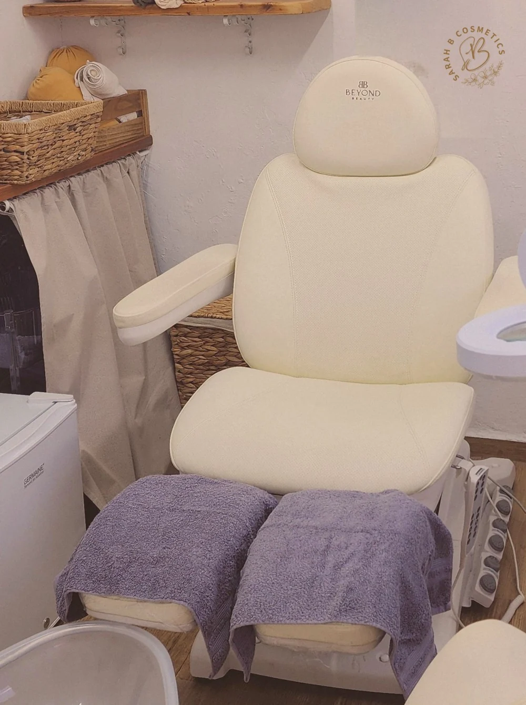

לפני שאני נוגעת ברגל אני שואלת מה קורה ומה מציק, ואני מקשיבה עד הסוף. תמיד אשאל אם בא לך לשתות משהו, ובחורף אפשר גם לחמם את הכיסא.
הכיסא חשמלי ויש לו שתי רגליים נפרדות. אפשר לשכב, ואפשר לשבת זקוף יותר, בדיוק לפי מה שנוח לך. לא צריך לטפס על שום דבר, אני זו שמעלה אותו, וזה מתאים גם למי שקצת מתקשה בתנועה.

מסכה, משקפי הגדלה וכפפות. המסכה שקופה בכוונה, כדי שתוכל לראות את הפנים שלי לאורך כל הטיפול. היא גם עוצרת את אבק השיוף, שעף באוויר כשעובדים על ציפורן.
משייפת את הקוטיקולות בקצה הציפורן, פותחת את התעלות, גוזרת ישר, ומחליקה עם בופר עדין. אם יש פטרת, אני מתעכבת שם ועובדת לעומק יותר. ויש מי שרגיש יותר, ואז אני פשוט עובדת לאט יותר.
ספריי שמרכך את העור ואת הקוטיקולות, והוא לא על בסיס חומצה, כך שהוא מתאים גם לאנשים סוכרתיים. אחר כך אני עוברת על כל כף הרגל עם משייף עדין, ובמקום שיש הרבה עור קשה או סדקים אני עוברת לכלי אחר שמתאים לזה.
מלחים, שמנים אתריים ושמנים צמחיים, עם צמחים שאני טוחנת בעצמי. אחריו שטיפה בקערה עם מים חמים וסבון. לא טובלים שם את הרגל, המים החמים פשוט כדי שיהיה נעים. ואז ייבוש טוב וניקוי עדין של הקוטיקולות.
לא אותו קרם לכולם. לעור שמתקלף ומחוספס יש קרם אחד, ולעור סדוק יש קרם קלנדולה. אני בוחרת לפי מה שראיתי בטיפול עצמו.
עיסוי לימפטי של כף הרגל וקצת רפלקסולוגיה. ואז אותו דבר בדיוק ברגל השנייה, מההתחלה ועד הסוף. ולסיום, עוד דקה של עיסוי שמאחד את שתי הרגליים, ואני מורידה את הטון של הדיבור כדי שיהיה נעים לצאת מזה לאט.